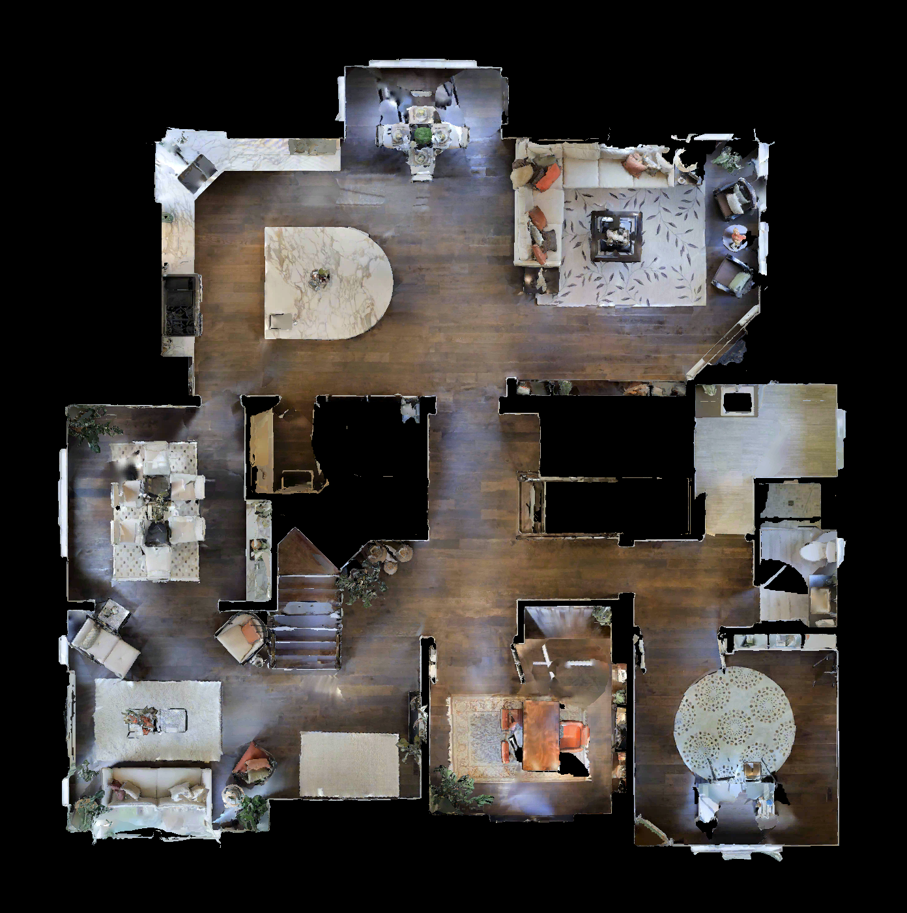

유효 관측 142개 / 위치 43개. 자동 검사 결과이며 사용자 승인 대기입니다.

의견은 현재 브라우저에만 저장됩니다. 아래 버튼으로 JSON을 내보내 전달해주세요.
전체 픽셀 float32 furnished depth·pose·40-ray structural GT는 파일 서버의 UnLoc/capture_v1/scenes/TbHJrupSAjP_L1/에 저장되어 있습니다. 이 페이지는 이미지와 GT 곡선 검토용입니다.